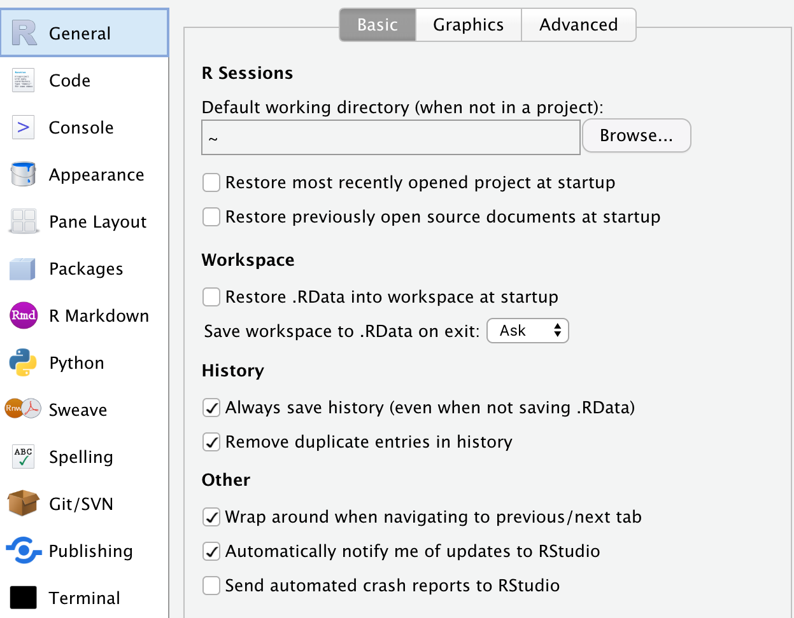
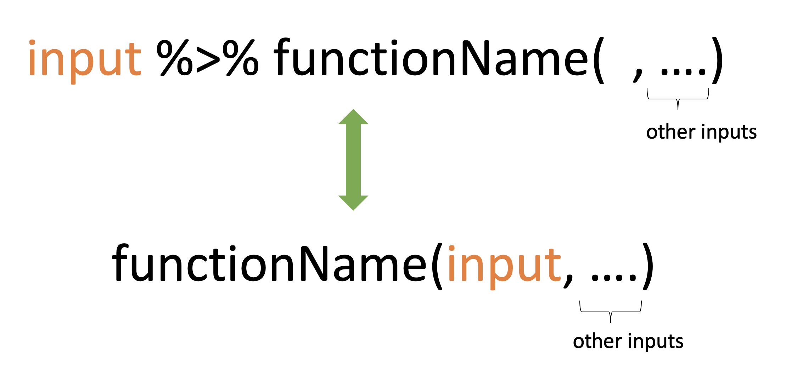
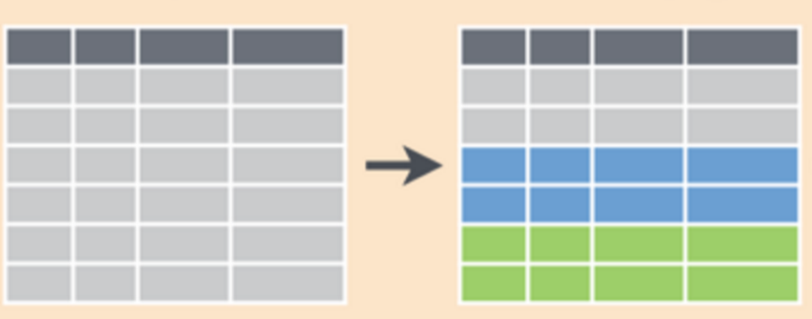
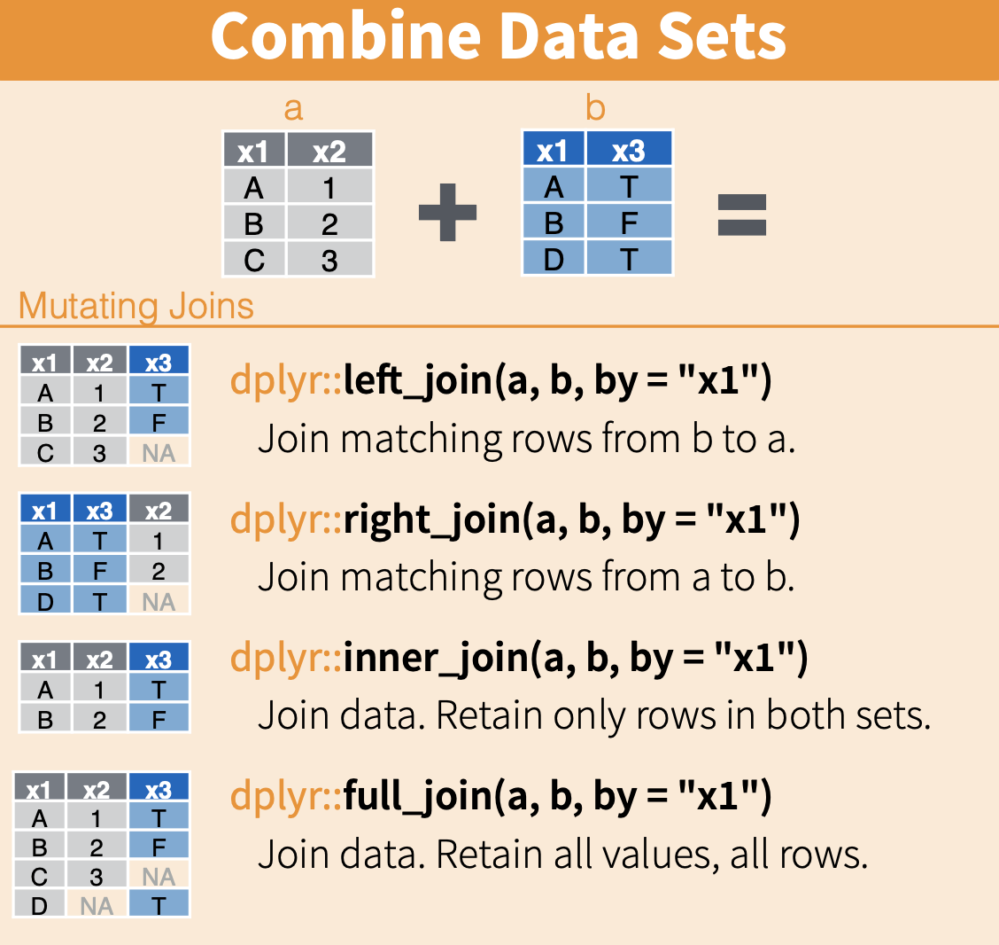
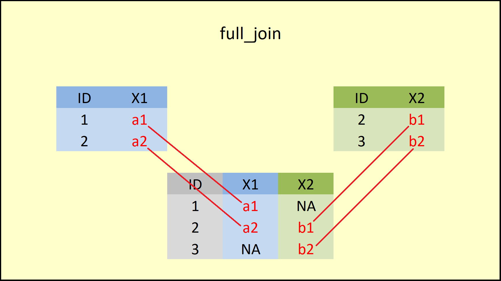

Class 5 Data Wrangling with R (Part II)
1 Data Wrangling
1.1 R Tips: More Convenient Package Management Using pacman
Please install
pacmanon your RStudiopacman’s functionalityLoad all packages stated in the parantheses, seperated by commas
If the package is not downloaded yet, download it, and then load it
R tip: if you want to use a function without loading the whole package, you can use two colons to call the function:
package::function
1.2 R Tips: Managing Objects in the RStudio Environment
- Best practice is to not save any objects once you close your RStudio session

rm(list = ls())is the command to remove everything in the current environmentls()is a function that returns the list of all objects in the current environmentrm(list = )removes any objects passed tolistargument
1.3 Recap: filter(), arrange(), and mutate()
filter(dataset, criteria): pick observations by their values
arrange(dataset,variable): reorder the rowsmutate(dataset, newvariable = ): create new variables with functions of existing variables
1.4 Pipe Operator
- Imagine a factory with different machines placed along a belt. Each machine is a dplyr function that performs a data cleaning step, like filtering or arranging data.
- The pipe therefore works like a conveyor belt, passing the output of one machine to another for further processing.

1.5 Pipe Operator
- The pipe has a huge advantage over any other method of processing data in R or Python: It makes data wrangling processes easy to read. If we read %>% as “then”, the code will be very easy to interpret as a set of instructions in plain English:
1.6 Without Pipe Operator
As a comparison, without using pipe operators, the previous data cleaning steps need to be done as follows. Overwriting our output dataframe
new_datain every line is problematic.First, doing this for a procedure with lots of steps isn’t efficient and creates unnecessary repetition in the code.
Second, this repetition also makes it harder to identify exactly what is changing on each line in some cases.
1.7 Select Variables: select
select()can select variables into a smaller dataset.
1.8 Aggregation by Groups: group_by
group_by()allows us to aggregate data by group and compute statistics for each group
- Although nothing seemingly happens to the dataset, internally, the dataset is already grouped based on the specified variable(s).

1.9 Aggregation by Groups: group_by() + summarise()
summarise()creates a new data frame after aggregating data. The final datasethas one row for each pair of grouping variables (for each
cylvalue)contains one column for each grouping variable (
cyl)contains one column for each new summarised variable (
avg_mp)
1.10 Aggregation by Groups: group_by() + summarise()
- We can have multiple group variables for
group_by
1.11 Aggregation by Groups: group_by() + mutate()
- Try the following code by replacing
summarise()withmutate(), what do you get now?
# compute the average mpg for each cyl,vs group
mtcars %>%
group_by(cyl,vs) %>% # group by cyl
mutate(avg_mp = mean(mpg)) %>% # compute the average mpg
ungroup()| mpg | cyl | disp | hp | drat | wt | qsec | vs | am | gear | carb | avg_mp |
|---|---|---|---|---|---|---|---|---|---|---|---|
| 21.0 | 6 | 160.0 | 110 | 3.90 | 2.620 | 16.46 | 0 | 1 | 4 | 4 | 20.56667 |
| 21.0 | 6 | 160.0 | 110 | 3.90 | 2.875 | 17.02 | 0 | 1 | 4 | 4 | 20.56667 |
| 22.8 | 4 | 108.0 | 93 | 3.85 | 2.320 | 18.61 | 1 | 1 | 4 | 1 | 26.73000 |
| 21.4 | 6 | 258.0 | 110 | 3.08 | 3.215 | 19.44 | 1 | 0 | 3 | 1 | 19.12500 |
| 18.7 | 8 | 360.0 | 175 | 3.15 | 3.440 | 17.02 | 0 | 0 | 3 | 2 | 15.10000 |
| 18.1 | 6 | 225.0 | 105 | 2.76 | 3.460 | 20.22 | 1 | 0 | 3 | 1 | 19.12500 |
| 14.3 | 8 | 360.0 | 245 | 3.21 | 3.570 | 15.84 | 0 | 0 | 3 | 4 | 15.10000 |
| 24.4 | 4 | 146.7 | 62 | 3.69 | 3.190 | 20.00 | 1 | 0 | 4 | 2 | 26.73000 |
| 22.8 | 4 | 140.8 | 95 | 3.92 | 3.150 | 22.90 | 1 | 0 | 4 | 2 | 26.73000 |
| 19.2 | 6 | 167.6 | 123 | 3.92 | 3.440 | 18.30 | 1 | 0 | 4 | 4 | 19.12500 |
| 17.8 | 6 | 167.6 | 123 | 3.92 | 3.440 | 18.90 | 1 | 0 | 4 | 4 | 19.12500 |
| 16.4 | 8 | 275.8 | 180 | 3.07 | 4.070 | 17.40 | 0 | 0 | 3 | 3 | 15.10000 |
| 17.3 | 8 | 275.8 | 180 | 3.07 | 3.730 | 17.60 | 0 | 0 | 3 | 3 | 15.10000 |
| 15.2 | 8 | 275.8 | 180 | 3.07 | 3.780 | 18.00 | 0 | 0 | 3 | 3 | 15.10000 |
| 10.4 | 8 | 472.0 | 205 | 2.93 | 5.250 | 17.98 | 0 | 0 | 3 | 4 | 15.10000 |
| 10.4 | 8 | 460.0 | 215 | 3.00 | 5.424 | 17.82 | 0 | 0 | 3 | 4 | 15.10000 |
| 14.7 | 8 | 440.0 | 230 | 3.23 | 5.345 | 17.42 | 0 | 0 | 3 | 4 | 15.10000 |
| 32.4 | 4 | 78.7 | 66 | 4.08 | 2.200 | 19.47 | 1 | 1 | 4 | 1 | 26.73000 |
| 30.4 | 4 | 75.7 | 52 | 4.93 | 1.615 | 18.52 | 1 | 1 | 4 | 2 | 26.73000 |
| 33.9 | 4 | 71.1 | 65 | 4.22 | 1.835 | 19.90 | 1 | 1 | 4 | 1 | 26.73000 |
| 21.5 | 4 | 120.1 | 97 | 3.70 | 2.465 | 20.01 | 1 | 0 | 3 | 1 | 26.73000 |
| 15.5 | 8 | 318.0 | 150 | 2.76 | 3.520 | 16.87 | 0 | 0 | 3 | 2 | 15.10000 |
| 15.2 | 8 | 304.0 | 150 | 3.15 | 3.435 | 17.30 | 0 | 0 | 3 | 2 | 15.10000 |
| 13.3 | 8 | 350.0 | 245 | 3.73 | 3.840 | 15.41 | 0 | 0 | 3 | 4 | 15.10000 |
| 19.2 | 8 | 400.0 | 175 | 3.08 | 3.845 | 17.05 | 0 | 0 | 3 | 2 | 15.10000 |
| 27.3 | 4 | 79.0 | 66 | 4.08 | 1.935 | 18.90 | 1 | 1 | 4 | 1 | 26.73000 |
| 26.0 | 4 | 120.3 | 91 | 4.43 | 2.140 | 16.70 | 0 | 1 | 5 | 2 | 26.00000 |
| 30.4 | 4 | 95.1 | 113 | 3.77 | 1.513 | 16.90 | 1 | 1 | 5 | 2 | 26.73000 |
| 15.8 | 8 | 351.0 | 264 | 4.22 | 3.170 | 14.50 | 0 | 1 | 5 | 4 | 15.10000 |
| 19.7 | 6 | 145.0 | 175 | 3.62 | 2.770 | 15.50 | 0 | 1 | 5 | 6 | 20.56667 |
| 15.0 | 8 | 301.0 | 335 | 3.54 | 3.570 | 14.60 | 0 | 1 | 5 | 8 | 15.10000 |
| 21.4 | 4 | 121.0 | 109 | 4.11 | 2.780 | 18.60 | 1 | 1 | 4 | 2 | 26.73000 |
- A new column is added to the original dataset, the value of which is from the group-by aggregation.
1.12 Consolidate Multiple Data Frames
- When consolidating multiple data frames, we usually have 4 types of joining methods

1.13 left_join
left_joinkeeps everything from the left data frame and matches as much as it can from the right data frame.- All IDs in the left data frame will be retained
- If a match can be found, value from the right data frame will be filled in
- If a match cannot be found, a missing value will be filled in

1.14 inner_join
inner_joinonly keeps the observations that appear in both data framesOnly common IDs in both data frames will be retained
If a match can be found, values will be filled in from both data frames

1.15 full_join
full_joinkeeps all observations from both data framesAll IDs in either data frames will be retained
If a match can be found, values will be filled in from both data frames

2 Data Cleaning
2.1 Variable Types
Non-metric
Categorical (gender, region, brand, religion)
Ordinal (Business Week rankings, NCAA rankings)
Metric
- Continuous (age, height, sales, rainfall)
Different types of variables are handled in different ways in statistics
Can talk about an average age, but not an average color
Some statistical techniques only work with one type of variable
We need to make sure the variables are of the correct data types. Or we may need to convert them to the correct types.
- e.g., from character to date time using
lubridatepackage
- e.g., from character to date time using
2.2 Missing Values
In R, missing values are represented by the symbol
NA(i.e., not available).Most statistical models cannot handle missing values, so we need to deal with them in R.
Few missing values: remove them from analysis.
Many missing values: need to replace them with appropriate values: mean/median/imputation
2.3 Outliers
In statistics, an outlier is a data point that differs significantly from other observations.
Few outliers: remove them from analysis
Many outliers: winsorize data
If the distribution of a variable is not normal distribution, we often log transform variables to mitigate outlier issues
3 Descriptive Analytics
3.1 Two Major Tasks of Descriptive Analytics
Describe data depending on your business purposes
“How much do our customers spend each month on average?”
“What percentage of our customers are unprofitable?”
“What is the difference between the retention rates of men and women?”
Make statistical inferences from data
“Based on our sample, does the difference between the spendings of men and women indicate that men and women respond differently in the customer base at large?”
“Based on our sample, can we conclude that customers who sign up for online banking are more profitable than customers who do not?”
“Based on our test mailing, can we conclude that ad-copy A works better than ad-copy B?”
3.2 Descriptive Analytics
- You can think of descriptive analytics as creating a dashboard to display the key information you would like to know for your business.
3.3 Summary Statistics
In descriptive analytics, summary statistics are used to summarize a set of observations, in order to communicate the largest amount of information as simply as possible.
There are two main types of summary statistics used in evaluation: measures of central tendency and measures of dispersion.
Measures of central tendency provide different versions of the average, including the mean, the median, 25 percentile, 75 percentile, the mode, etc.
Measures of dispersion provide information about how much variation there is in the data, including the range and the standard deviation.
It’s good to include summary statistics table in your dissertation before any statistical analysis!
Commonly reported summary statistics include mean, standard deviation, number of observations, min, 25 percentile, median, 75 percentile, and max.
Then describe the distribution of the variable, dispersion of the variable, etc.
3.4 Summary Statistics with R
In R, a nice package to report summary statistics is
modelsummary.datasummary_skim()is a shortcut to conduct basic summary statisticsFor more features, refer to the package tutorial here, especially
datasummary()function.datasummary_skim()is a special case of more generaldatasummary(), which outputs a pre-determined set of summary statistics
3.5 Correlation Matrix
Correlation matrix helps us understand the co-movement of any two variables in the data
datasummary_correlation()reports the pairwise correlation coefficientIn general, in a statistical model, variables of high correlation should not be included together, which leads to instability
4 Preliminary Customer Analysis
Spend 30 min-ish to work on the case study in a group.
There are 7 questions in total. At the end of the discussion, each group selects a group leader to answer one question.
To show your codes, join the Zoom link under “Module Overview” on Moodle.
The group that did not answer correctly needs to do a performance next week!
4.1 After-Class Exercise
What percent of customers are single? Try alternative ways to do the calculation.
Is the average total spending by responders and non-responders statistically different? Answer this question using a t-test.
Is income and total spending correlated?
Are PhDs more likely to respond to marketing offers than Graduation? Use a statistical test to answer the question. Is the result what you expected?
What would be the other useful descriptive analytics you would like to know for Tesco?